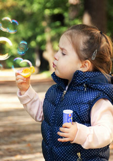
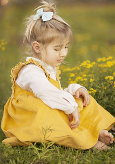

0 a 24 meses

2 a 4 años

5 a 7 años
8 años o más
- a Antes de iniciar a codificar, elegir una temática para un sitio web (ej: actividades de invierno, spa, muebles, cultura japonesa, juguetes, playas, etc). Crear con JS un elemento span nuevo y agregarle el texto "Temática elegida: " y luego el nombre de la que se haya elegido. Ej: "Temática elegida: autos deportivos". Agregar el elemento generado como hijo de algún elemento del DOM (h1, body, etc), de tal manera que sea visible por el usuario.
- Definir una paleta de 4 colores, basada en algún sitio web o manual de marca existente, que sea de la misma temática o rubro definido en el punto anterior. Incorporar un link con la URL del sitio en el cual esté basado la paleta. Utilizar estos colores libremente en este documento, con el fin de estilizarlo. Si se desea, se pueden incorporar otros elementos HTML libremente, modificar los existentes o eliminarlos, como así también utilizar todas las propiedades de CSS que se desee, lo hayamos visto o no en clase, siempre y cuando se cumpla con la consigna.
- Cargar los colores definidos en el punto anterior como valores de un array. Generar en la vista un elemento select, con un elemento option para cada uno de los colores existentes en el array. El texto visible por el usuario y el value de cada option pueden o no coincidir.
- Adicionar un checkbox con el texto "Modo superpuesto".
- Crear en la vista 4 círculos concéntricos sin color de fondo, con borde negro. Programarlos para que al hacer click sobre uno de ellos, cambie su color de fondo por el que esté seleccionado en el momento en el select. Si el modo superpuesto está activado, se deberán pintar también los círculos que se encuentren detrás, en caso contrario, solo cambiará el color del círculo clickeado.
- Disponer de un botón de reset, para borrar el color de todos los círculos.
- No utilizar id ni clases para referenciar los botones. Usar constructores de variables de ES6 y arrow functions. Registrar todos los eventos con addEventListener en el document. Realizar el código de tal manera que para agregar más colores solamente sea necesario modificar el array.
- Al abrirse la página o cambiarse el tamaño de la ventana, si la resolución es menor a 500px, cambiar el color de todos los círculos a gris (pueden ser todos grises o distintos tonos de gris), ignorando cualquier tipo de actividad en los mismos. Es decir que, al ser clickeados, no reaccionarán. Deshabilitar también el select y checkbox existentes. Si se cambia el tamaño de la ventana y llega a los 500px o más, todo volverá a funcionar como antes.